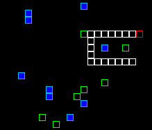

All you need is ruby, cairo and gtk
Follow the build instructions for your OS
Check out some example applications in the repo
Or watch some demo videos on youtube
Show off your shoes, or try out others
Green Shoes is a derivative of Shoes, written in pure Ruby. Shoes is basically a toolkit for building GUI (Graphical User Interface) applications.
If you have any questions, feel free to stop by on IRC at #shoes on freenode.net, or send us a message on the Mailinglist. We're also on twitter @shoooesrb.
Keep up with the latest shoes related happenings on the blog .